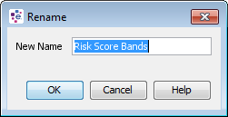
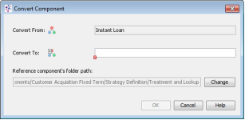

Edit a Segmentation Tree
A segmentation tree consists of:
- tree splits that form the graphical representation of segmentation rules which together form the tree. Tree splits contain the information used to group those records which are to be treated in the same way
- leaf nodes, the end points of the tree
- outcomes, which are used to describe the expected treatment, actions, values and classification that will be applied to each record falling into a given outcome.
An outcome can be associated with one or more leaf nodes so the same outcome can be applied to multiple leaf nodes.
A Segmentation Tree can be created from the Explorer window.
| You will only be able to add a component type that has been allowed for the selected folder. If it is not allowed it will not be listed and therefore cannot be created. |
To create a Segmentation Tree
- From the Explorer window right click at the required folder level and select Add component.
- Select Segmentation Tree.
- In the Create component dialog enter the name of the Segmentation Tree.
- Select the Open new components in component editor check box.
- Click on the OK button.
The Segmentation Tree Editor will open allowing you to edit the Segmentation Tree.
The Segmentation Tree name will be listed in the Explorer window under the selected folder level. The component is identified by the icon.
If you do not wish the editor to open, keep the check box de-selected. From the Explorer window right click on the Segmentation Tree and select Open.
| A Segmentation Tree can be created as an embedded component from within other Segmentation Trees. |
To edit a tree
Segmentation components or segmentation rules can be added to any of the leaf nodes of the tree to form tree splits. Components added from the Resources window are referenced by the tree and other components that use them.
To add a referenced component to a leaf node
- With the Segmentation Tree editor open click on the Resources window. The valid component types will be listed.
- Expand the component type list to display all the available components of that type. For example:

- Drag and drop the required component onto the leaf node you require.

- The new tree split will be added to the tree. The new tree split will provide alternate pathways for records that satisfy the criteria defined in this new segmentation rule.
- Repeat steps 2 and 3 until all the rules you require have been added to the tree.


You can now go on to define leaf node names and outcomes to your tree.
or
Components can be referenced from within the tree (this means that they can be changed from outside of the tree and may be shared by other components). Alternatively, a component can be created from within the tree editor and will be embedded into the tree. This means the component details are only used by this tree and can only be edited from within the tree.
| Only Class Set, Matrix, Boolean Expression and Segmentation Tree are supported for this version. |
To add an embedded tree component onto a leaf node
- With the Segmentation Tree editor open right click on a particular leaf node and select Insert Embedded. The Insert Embedded Component dialog is displayed.

- Overtype New Tree Element with a unique name (within the tree) for the component and then select the required component type.
- Click on the OK to confirm the selection and close the dialog.
The system will open the editor for the component you have chosen. - You will now need to edit the embedded component. See the relevant topics within Class Set, Matrix, Boolean Expression and Segmentation Tree.
- Once you have finished defining the component click on the Close Internal Editor button.
The component will be added to the tree as a new split. The new tree split will provide alternate pathways for records that satisfy the criteria defined in this new segmentation rule. - Repeat steps 1 and 5 until all the embedded segmentation rules you require have been added to the tree.

You can now go on to define leaf node names and outcomes to your tree.
A segmentation component that has been created from within the tree editor, will be embedded into the tree. This means the component details are only used by this tree and can only be edited from within the tree.
| Only Class Set, Matrix, Boolean Expression and Segmentation Tree are supported for this version. |
Once an embedded segmentation component has been added to a tree it can be renamed.
To rename an embedded segmentation component
- With the Tree editor open and an embedded segmentation component added to the tree, right click on the tree split and select Rename.
The system will open the Rename dialog.
- Type in a new name for the embedded segmentation in the New Name field and click on the OK button.
The system will check to ensure that this name does not already exist and rename the component.
Segmentation components, such as Boolean Expressions, Class Sets, Matrices and Segmentation Trees can be referenced from within the tree (this means that they can be changed from outside of the tree and may be shared by other components). Alternatively these segmentation components can be created from within the Tree editor and will be embedded into the tree. This means the component details are only used by this tree and can only be edited from within the tree.
Should the user wish to change an embedded segmentation component to a referenced segmentation component or a referenced segmentation component to an embedded segmentation component, in the Tree editor there is a Convert option.
To convert a segmentation component
- Within the Tree editor open, on any of the tree splits, right click and select Convert.

The system will open the Convert Component dialog.
- Type the name you require in the Convert To box.

| When you are converting an embedded component into a referenced component, the system will not allow you to use a name that already exists in the folder that is listed in the Reference component's folder path. Either change the name or click on the Change button and select a different folder. |
- Click on the OK button.
The system will convert the component.
If you have converted an embedded component to a referenced component the new referenced component will appear in the Resources window and be available for use in other components. If you have converted a referenced component, the referenced component will still exist in the Resources window, but a new embedded component will exist in the editor.
Outcomes are assigned to the leaf nodes of a tree. Leaf nodes assigned the same outcome will have the same action/treatment applied to them.
To create an outcome for a tree
- With the Segmentation Tree editor open, right click in the Outcomes area and select Add Outcomes.

An outcome will be created with a new colour and a default name. - Replace the default name with a new unique name for the outcome.
- Double click on the outcome colour to change an outcome colour (if desired) and select a new colour from the Pick a Colour screen.
- Repeat for all the outcomes required.

You will now have the outcomes you require for the tree.
In order for a tree to be deployed all the leaf nodes must have an outcome assigned to them. An outcome can be assigned to one or more leaf nodes. Leaf nodes assigned the same outcome will have the same action/treatment applied to them. In a Segmentation Tree you can have unassigned outcomes. In the outcomes area these are displayed with the following icon.
The user can determine how the outcomes are displayed in the tree by right clicking on an outcome in the tree and selecting Outcome Display followed by Text, Colour or Mixed.
| Text - will display only the names of the outcome assigned to the leaf node Colour - will display only the colour of the outcome assigned to the leaf node Mixed - will display both the colour of the cell and the outcome name assigned to it |
To assign an outcome to a leaf node
- With the Segmentation Tree editor open and in the Outcomes area, click on the outcome you wish to assign.
The Assign outcome button on the tool bar will automatically become activated.
on the tool bar will automatically become activated.

{kind=link}
{kind=link}
{kind=link}
| You must already have created the outcome(s) and the leaf nodes to which they are to be assigned. |
- In the segmentation tree editor click on the outcome(s) of the leaf node that you wish to assign the outcome(s). The same outcome(s) will be assigned to any leaf nodes you select until you select another outcome in the Outcomes area.
- Repeat as necessary to assign an outcome to all of the leaf nodes.
- Select how the colour and text is to be displayed by right clicking on any outcome name in the segmentation tree editor and selecting Outcome Display followed by Text, Colour or Mixed.
Each outcome should now have an outcome assigned. Those leaf nodes that have not had an outcome assigned will have <<Unassigned>> displayed in the Outcome column and the following blue question mark icon displayed on the leaf node itself.
Each leaf node of a Segmentation Tree should have a leaf node name. The leaf node name is a user defined description that identifies the action that will be applied to any record that is assigned to this leaf node.
To define a leaf node name
- With the Tree editor open left click on the first <<Leaf Node Name>> that needs defining and type a description.
Repeat until all the leaf nodes that need to have a description given to them have been completed. Auto Generate that is access by right clicking underneath the Leaf Node Name column in the Tree editor enables the user to automatically generate leaf node names in a tree if required.
The segmentation tree will now be ready for use within other components.